| 縦断データの分析 |
| 縦断データの分析 |
 測定モデル
測定モデル外生的構成概念に関する観測変数 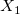 の 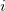 番目の観測値について、
 |
(8.14) |
を考える。
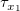: 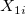 の母集団平均、同じ構成概念に対する異なる指標の観測スコアが異なる平均を取ることができる
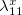: 尺度因子、ある構成概念が異なる尺度で測定されることが可能
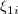: （外生的な）構成概念の値
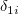: 指標 のうち、仮定された構成概念に依存しない部分
外生的構成概念すべてについて測定モデルをまとめると、
| 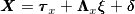 | (8.4) |
と表記できる。 ここで、 の母分散共分散行列を
の母分散共分散行列を  とおく。ここには、あらゆる構造を仮定することが可能。
とおく。ここには、あらゆる構造を仮定することが可能。
また、外生的構成概念 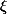 については、平均 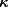、母共分散行列 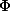 を仮定する。
 測定モデル
測定モデル内生的構成概念に関する測定モデルを、
| 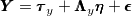 | (8.11) |
と表す。 また、 の母共分散行列は
の母共分散行列は  とする。
とする。
外生的構成概念の場合と異なり、内生的構成概念の平均と分散は、構造モデルによって表現される。
外生的構成概念と内生的構成概念の関係性を、
![\begin{equation} \underbrace{\bm@general \boldmath \m@ne \mv@bold \bm@command {\eta }}_{\text {endogenous factors}} = \underbrace{\bm@general \boldmath \m@ne \mv@bold \bm@command {\alpha }}_{\text {intercept}} + \underbrace{\bm@general \boldmath \m@ne \mv@bold \bm@command {\Gamma } \bm@general \boldmath \m@ne \mv@bold \bm@command {\xi }}_{\text {loadings} \times \text {exogenous factors}} + \underbrace{\bm@general \boldmath \m@ne \mv@bold \bm@command {B} \bm@general \boldmath \m@ne \mv@bold \bm@command {\eta }}_{\text {loadings} \times \text {endogenous factors}} + \underbrace{\bm@general \boldmath \m@ne \mv@bold \bm@command {\zeta }}_{\text {residuals}} \end{equation}](images/img-0132.png) |
(8.15) |
と表す。 ただし、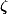 の母共分散行列は 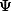 とする。
Meredith & Tisak (1984; 1990), Tisak & Meredith (1990) による開発
McArdle らによる拡張、心理・社会学への応用
Muthén らによる、時間構造化されていないデータや欠測値の扱いに関する開発
潜在成長モデルを当てはめるには、多変量フォーマットに則った個人データセットの形で用意すること。
つまり、時間構造化されたデータが最も扱いやすく、望ましい。
測定モデルへの移植今、レベル1モデルとして
| 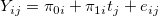 | (8.19) |
を考える。
これは、仮に3時点あるとすると
![\begin{equation} \begin{array}{cccccccc}\begin{bmatrix} Y_{i1}
\\ Y_{i2}
\\ Y_{i3}
\end{bmatrix}& = & \begin{bmatrix} 0
\\ 0
\\ 0
\end{bmatrix}& + & \begin{bmatrix} 1
& t_1
\\ 1
& t_2
\\ 1
& t_3
\end{bmatrix}& \begin{bmatrix} \pi _{0i}
\\ \pi _{1i}
\end{bmatrix}& + & \begin{bmatrix} e_{i1}
\\ e_{i2}
\\ e_{i3}
\end{bmatrix}\\ \bm@general \boldmath \m@ne \mv@bold \bm@command {Y} & = & \bm@general \boldmath \m@ne \mv@bold \bm@command {\tau }_ y & + & \bm@general \boldmath \m@ne \mv@bold \bm@command {\Lambda }_ y & \bm@general \boldmath \m@ne \mv@bold \bm@command {\eta } & + & \bm@general \boldmath \m@ne \mv@bold \bm@command {\epsilon } \\ \end{array} \end{equation}](images/img-0136.png) |
(8.21) |
と 測定モデルの形で書ける。 ただし、負荷 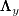 はデータとして固定されていることに注意。 この固定された負荷に合うように、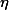 が調整されることになる。
今、レベル2モデルを説明変数のない無条件成長モデルとすると、
| 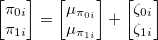 | (8.26) |
は
![\begin{equation} \begin{array}{ccccccccccc}\begin{bmatrix} \pi _{0i}
\\ \pi _{1i}
\end{bmatrix}& =& \begin{bmatrix} \mu _{\pi _{0i}}
\\ \mu _{\pi _{1i}}
\end{bmatrix}& +& \begin{bmatrix} 0
& 0
\\ 0
& 0
\end{bmatrix}& \begin{bmatrix} 0
\\ 0
\end{bmatrix}& +& \begin{bmatrix} 0
& 0
\\ 0
& 0
\end{bmatrix}& \begin{bmatrix} \pi _{0i}
\\ \pi _{1i}
\end{bmatrix}& +& \begin{bmatrix} \zeta _{0i}
\\ \zeta _{1i}
\end{bmatrix} \label{eq.0827} \\ \bm@general \boldmath \m@ne \mv@bold \bm@command {\eta } & = & \bm@general \boldmath \m@ne \mv@bold \bm@command {\alpha } & + & \bm@general \boldmath \m@ne \mv@bold \bm@command {\Gamma } & \bm@general \boldmath \m@ne \mv@bold \bm@command {\xi } & + & \bm@general \boldmath \m@ne \mv@bold \bm@command {B} & \bm@general \boldmath \m@ne \mv@bold \bm@command {\eta } & + & \bm@general \boldmath \m@ne \mv@bold \bm@command {\zeta } \\ \end{array} \end{equation}](images/img-0140.png) |
(8.27) |
と表すことができる。
測定モデルへの時不変な予測変数の追加（レベル2の説明変数）今、レベル2を予測変数 を含んだモデルにすることを考える。 すなわち、
| 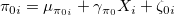 | |||
| 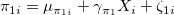 |
である。これは、
| 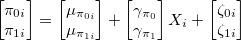 |
とも表わせるから、式 (8.27) に合わせると、
![\begin{equation*} \begin{array}{ccccccccccc}\begin{bmatrix} \pi _{0i}
\\ \pi _{1i}
\end{bmatrix}& =& \begin{bmatrix} \mu _{\pi _{0i}}
\\ \mu _{\pi _{1i}}
\end{bmatrix}& +& \begin{bmatrix} \gamma _{\pi _0}
\\ \gamma _{\pi _1}
\end{bmatrix}& \begin{bmatrix} X_ i
\end{bmatrix}& +& \begin{bmatrix} 0
& 0
\\ 0
& 0
\end{bmatrix}& \begin{bmatrix} \pi _{0i}
\\ \pi _{1i}
\end{bmatrix}& +& \begin{bmatrix} \zeta _{0i}
\\ \zeta _{1i}
\end{bmatrix} \label{eq.0827} \\ \bm@general \boldmath \m@ne \mv@bold \bm@command {\eta } & = & \bm@general \boldmath \m@ne \mv@bold \bm@command {\alpha } & + & \bm@general \boldmath \m@ne \mv@bold \bm@command {\Gamma } & \bm@general \boldmath \m@ne \mv@bold \bm@command {\xi } & + & \bm@general \boldmath \m@ne \mv@bold \bm@command {B} & \bm@general \boldmath \m@ne \mv@bold \bm@command {\eta } & + & \bm@general \boldmath \m@ne \mv@bold \bm@command {\zeta } \\ \end{array}\end{equation*}](images/img-0144.png) |
と表すことができる。
すると、 測定モデルとして
 |
(8.31) |
ただし 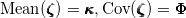、もしくは、
 |
を考えているとすれば良いことになる。 後者の方法では、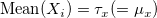 と指定しており、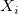 が右辺において中心化されていることになる。
、 測定モデルの両方で個々人の変化をモデリングする内生的構成概念も、それを予測する外生的構成概念も個人内で変化している場合、
測定モデルは
 |
|||
 |
と表すとして、 の共分散行列 と の共分散行列 に加え、 と の共分散行列  を指定する必要がある。
を指定する必要がある。
メモ
この共分散行列は、外生的構成概念における測定モデルの誤差と内生的構成概念における測定モデルの誤差間の相関関係を表したもの。仮にすべてゼロとおいたとしても、分析自体は行えるはず。
メモここまで
今、外生的構成変数と内生的構成概念が1つずつあるモデルを考える。 外生的構成変数の切片と傾きを ![$[\pi ’_{0i}, \pi ’_{1i}]^ T$](images/img-0153.png) 、内生的構成概念の切片と傾きを
、内生的構成概念の切片と傾きを ![$[\pi _{0i}, \pi _{1i}]^ T$](images/img-0154.png) とおく。
とおく。
すると、切片から切片、切片から傾き、傾きから切片、傾きから傾き、へのパス係数を  に含んだモデル
に含んだモデル
![\begin{equation*} \begin{array}{ccccccccccc}\begin{bmatrix} \pi _{0i}
\\ \pi _{1i}
\end{bmatrix}& =& \begin{bmatrix} \mu _{\pi _{0i}}
\\ \mu _{\pi _{1i}}
\end{bmatrix}& +& \begin{bmatrix} \gamma _{\pi _0 \pi '_0}
& \gamma _{\pi _0 \pi '_1}
\\ \gamma _{\pi _1 \pi '_0}
& \gamma _{\pi _1 \pi '_1}
\end{bmatrix}& \begin{bmatrix} \pi ’_{0i}
\\ \pi ’_{1i}
\end{bmatrix}& +& \begin{bmatrix} 0
& 0
\\ 0
& 0
\end{bmatrix}& \begin{bmatrix} \pi _{0i}
\\ \pi _{1i}
\end{bmatrix}& +& \begin{bmatrix} \zeta _{0i}
\\ \zeta _{1i}
\end{bmatrix} \label{eq.0827} \\ \bm@general \boldmath \m@ne \mv@bold \bm@command {\eta } & = & \bm@general \boldmath \m@ne \mv@bold \bm@command {\alpha } & + & \bm@general \boldmath \m@ne \mv@bold \bm@command {\Gamma } & \bm@general \boldmath \m@ne \mv@bold \bm@command {\xi } & + & \bm@general \boldmath \m@ne \mv@bold \bm@command {B} & \bm@general \boldmath \m@ne \mv@bold \bm@command {\eta } & + & \bm@general \boldmath \m@ne \mv@bold \bm@command {\zeta } \\ \end{array}\end{equation*}](images/img-0156.png) |
を考えれば良い。
行列 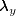 と  の負荷を適切な値に指定すれば良い。
の負荷を適切な値に指定すれば良い。
行列 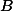 を導入することで、内生的構成概念を互いに予測し合うことが可能になる。
| 縦断データの分析 |